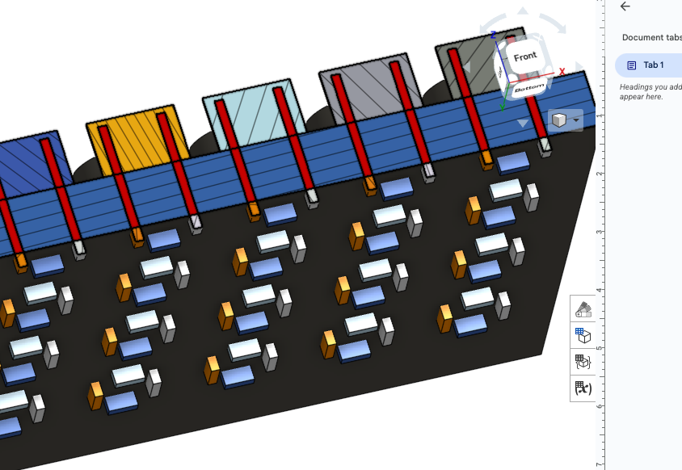
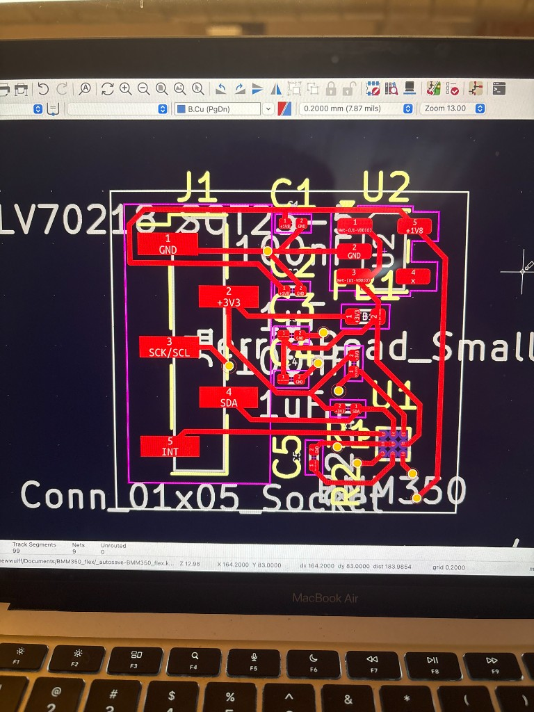
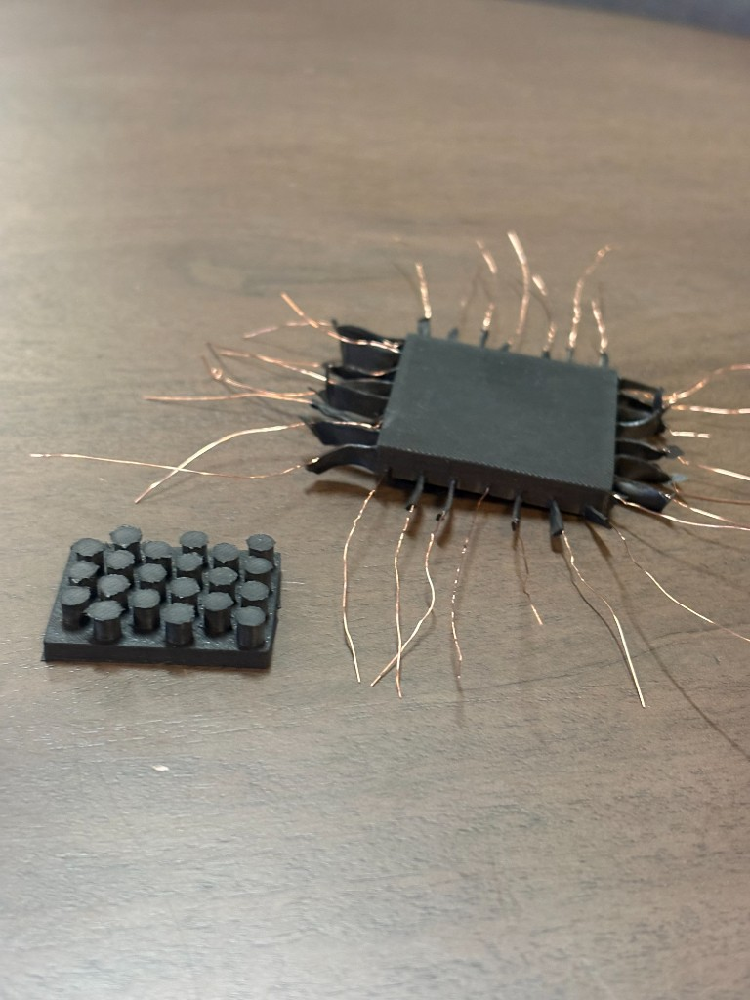
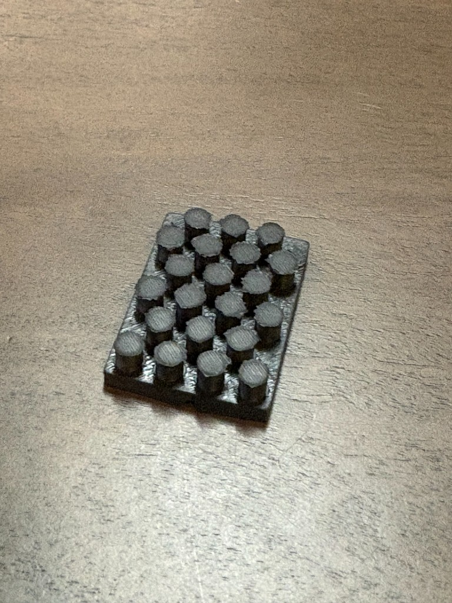

Solving the chicken-and-egg problem in robotic touch — building cheap, scalable sensors that can run on any humanoid.
The Problem
I'm building tactile sensors that are cheap enough to actually scale. Starting with the LeRobot SO-101 as the development platform — the goal isn't a one-off research prototype. It's sensors that can be deployed across any humanoid or robot platform.
The bigger vision: get real tactile data at scale, feed it back into models, and start closing the loop. Humanoids need touch to do useful work in the real world. That can't happen until the sensors exist in large enough numbers to matter.
Currently in active development. Starting with the SO-101, with the intent to scale to all humanoid platforms.
Sensor Design



